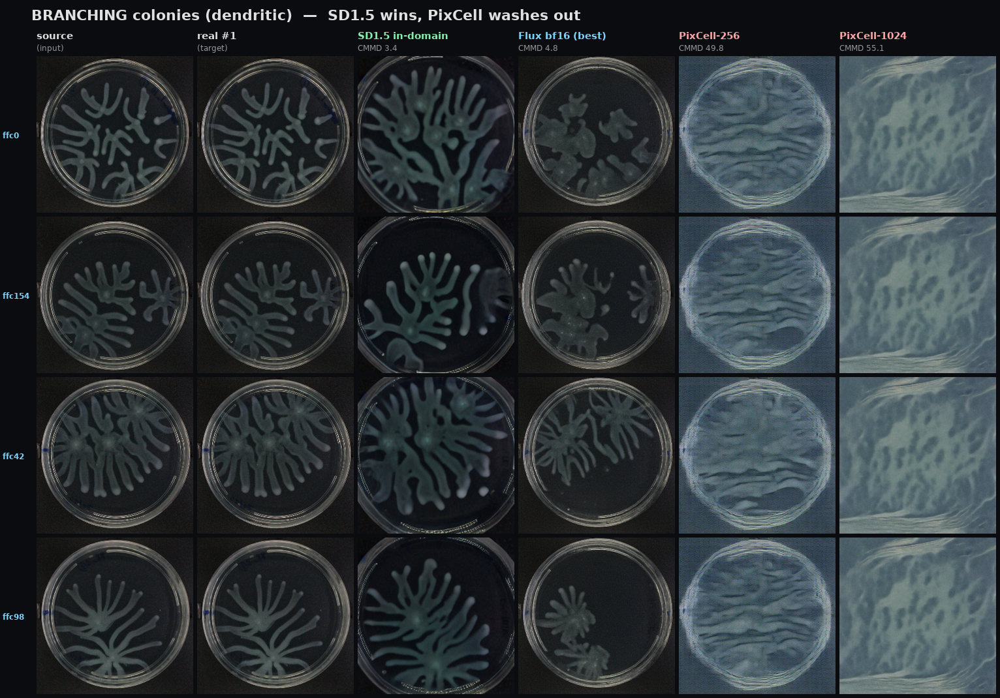
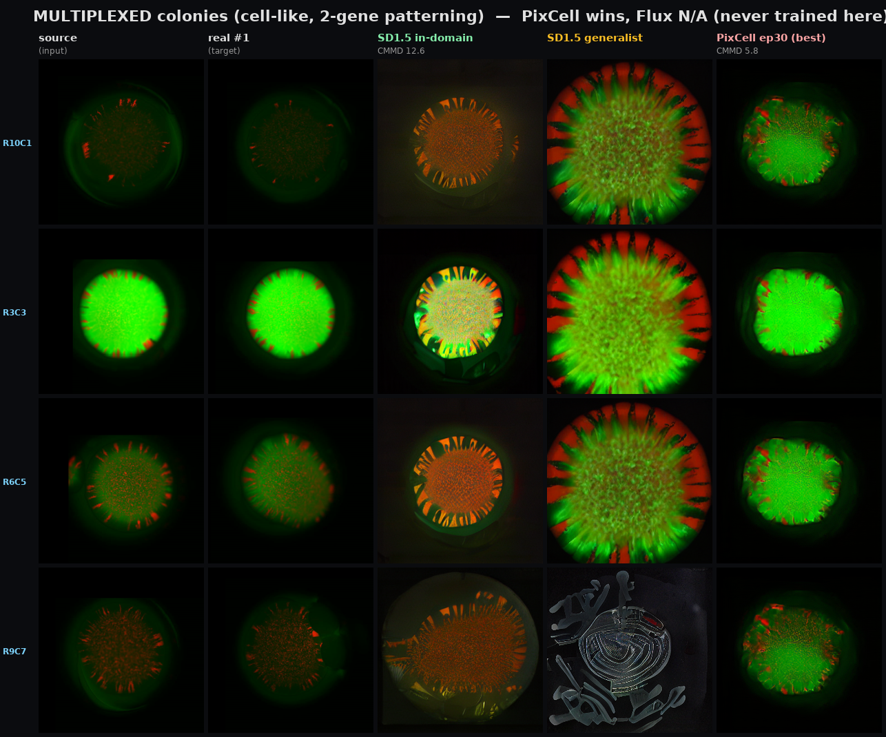

How every augmenter backbone we've trained performs on two different kinds of bacterial colony — real outputs, aligned by condition. Updated 2026-10-08.
| CMMD (lower = better) | Branching | Multiplexed (cell-like) |
|---|---|---|
| SD1.5 — in-domain | 3.38 | 12.57 |
| Flux — bf16 (best of 3 configs) | 4.84 | — (not trained) |
| PixCell — best epoch | 49.8 (washed) | 5.78 |
All numbers verified from each run's metrics.json, scored identically vs held-out real replicates. CMMD = distribution-level CLIP distance.
SD1.5 reproduces the full branch structure; Flux (even fully scaled) is recognizable but blobbier; both PixCell variants lose the branching entirely — texture with no dendrites.

Rows = 4 test conditions (evenly spaced across the sorted 28 held-out, not hand-picked). Columns: source · one real replicate · then each backbone's best config.
PixCell produces the sharpest cell-like detail and matches the distribution best (CMMD 5.8). The in-domain SD1.5 is plausible; the generalist SD1.5 is over-saturated/unrealistic. Flux was never trained on this domain.

Rows = 4 conditions across the 10×7 (aTc × IPTG) grid. Columns: source · one real replicate · SD1.5 in-domain · SD1.5 generalist · PixCell.
🟢 SD1.5 — solid on both domains; the reliable workhorse. 🔵 Flux — branching only; diverse but less realistic, doesn't beat in-domain SD1.5. 🔴 PixCell — domain-dependent: great on cell-like multiplexed, useless on branching.
Montages regenerable: make_crossbackbone.py on DCC. Also tried but not shown: Flux fp8 pilot/scaled configs (see the corrected deck), BBDM (early, dropped).